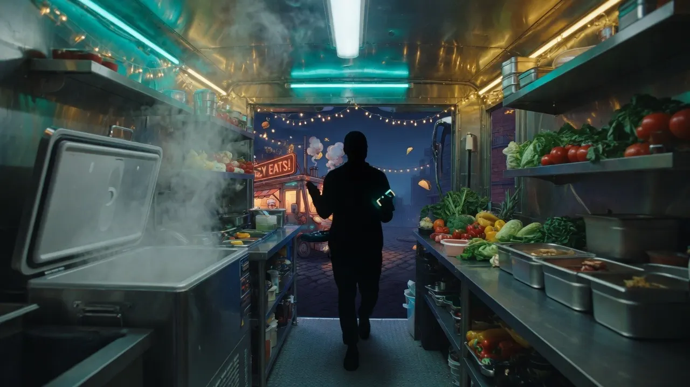

One Program
One browser-side program
You open one place. It starts simple (walk or talk inventory in, English, Spanish, or mixed), then grows into the full system — zones, scales of pack size, and pinpoint counts built in.

The Kitchen Table Version
Install it, bookmark one page in the browser, and that page becomes your whole system. Starts as an easy guided walkthrough — walk or talk your inventory in (English, Spanish, or mixed). Grows into the most complete free food-truck inventory program we know how to ship.
The Big Picture
One calm control panel that runs on your laptop. Starts simple for the average operator — walk or talk the truck in, easy and fast. Grows into the industrial-strength toolkit: voice, count types, POS, recipes, load lists, multi-truck, crew PINs.
One Program
You open one place. It starts simple (walk or talk inventory in, English, Spanish, or mixed), then grows into the full system — zones, scales of pack size, and pinpoint counts built in.
The Changeover
At first it feels like a guided checklist. After the truck is mapped, the same page opens into Home base: sheets, reports, inputs, menu, stops, settings.
The Spine
You talk (or walk) the truck the way you already walk it. A parser on your laptop — no internet, no AI, no account — reads your words, lays out the map, and does the math.
Inside the Home Base
Last count, current cycle, what’s below PAR, jump-to cards, sample taco truck.
Count sheet, variance, order list, product master — the workbook view.
Zones, extra trucks, transfers, crew board. Cooler · freezer · dry · prep.
POS sales, invoices & receiving, input log. Square / Toast / Clover / any CSV.
Plate cost, food-cost %, margin. Recipe qty in the product’s own unit.
Lunch lot, brewery, festival — PAR per stop type, printable load list for tomorrow.
Before Setup
Nothing exotic. Just the pieces a real truck already has, gathered into one guided flow.
Python 3.10+ and a browser. Chrome, Edge, or Safari for voice. Typing works everywhere.
Voice notes in English or Spanish — cooler, freezer, dry, prep — naming product as you go. Or count on the phone over Wi-Fi.
That one saved walk is the seed the built-in parser reads to build your whole truck.
Type or paste invoice lines and pull the Square / Toast / Clover / CSV export once the first cycle is ready.
The first map gets checked and approved before the program becomes your home base.
Not required for anything. Add it only if you want invoice photos read instead of typing.
First Setup
The first setup is meant to feel like a guided conversation. Do one thing, check it, then move to the next. Starts simple — the full toolkit is already inside when you need it.
Download the package and unzip it. Run the installer (Install.command on Mac, Install.bat on Windows, or python server.py). It opens one browser window at http://127.0.0.1:5053/. Bookmark that window — that bookmark is the software. Everything you build lives inside that one page.
One install, one bookmark. Come back to the same place every night. Want to count from a phone? Start it with --lan on the truck’s Wi-Fi and open the address it prints.
The first time it opens, you land on the guided walkthrough — the caterpillar. Welcome, optional AI (off by default), or “Load sample taco truck” if you just want to look around. No account, no cloud, no AI required. It walks you through mapping the whole truck one calm step at a time.
This is the caterpillar stage: patient, offline, focused on getting your truck understood. Later it becomes the butterfly — Home base with the full industrial toolkit.
Step 1 is Your truck: the name on the wrap, weekly / every two weeks / monthly cycle, units. If you run more than one truck later, you add them in Settings. For the first build you name this one plainly.
The name shows on Home base and on printed load lists. You can rename it anytime.
Name the physical places you walk: cooler, freezer, dry, prep — plus extras you turn on (window, commissary, outside, line / make table, lowboy, cab). Two coolers in the truck means two sections in the system. This is the frame you pour everything else into.
Count the rooms in the rolling kitchen, then name them. Real shelf names come after the first map.
Stand in the truck and vocalize it the way you already walk it. Go section by section, shelf by shelf — say the location, then name what’s in it. Move the same route every time so the map matches the real box. Speak English, Spanish, or mix them. Typing always works if the generator is too loud for a mic.
This first voice note is the seed. Everything the program builds grows out of this walk, so speak it in order.
The walk also takes product invoices — PDF, photos, CSV, or typed lines. You do not have to finish invoices to continue; they merge with what you said on the next step. Photos of invoices need optional AI if you want them read; CSV and typed lines work locally.
Invoice quantities in setup are not added to stock. The walk count is what’s on the truck. Receiving still happens later in All inputs.
Step 4 shows “Here’s what I registered” per section. Tap any row to edit name, section, count, unit, pack, cost, vendor. Merge, link or unlink an invoice line, add a missing product, or park something as commissary-only / not stocked / skip. Nothing saves until Confirm & continue.
The program does the heavy lifting. The operator approves the truth.
Approve the map: rename, move, set PAR. Then the first live count, section by section — voice fills the numbers, you save. After that, Home base opens as the butterfly: metrics, jump-to cards, low-PAR alerts.
Printable count sheets and the on-phone stepper follow the same walking order you spoke the first time.
Create an owner PIN if you want, or leave it open. People & access (admin / manager / crew, per-permission, truck lock) stay available in Settings. Crew can be limited to daily end-of-shift counts.
Open until you create the first admin. Same pattern as Open Source Barware.
Inside Home base: inventory sheets, reports, on the truck, all inputs, menu & costing, stops & load lists, settings. Daily / weekly / monthly count types. Multiple trucks and transfers. Backups, restore, reset. Because it is open source, nothing is locked away.
Change the sections, restructure the layout, own the whole thing. Complete access, no lock-in.
Optional AI
Connect ChatGPT, Claude, Grok, local Ollama, or any OpenAI-compatible endpoint only if you want invoice photos and PDFs read. Your key stays in data/config.json on this computer and is left out of backups. Skip it now, add it later in Settings, or never touch it.
Count
Daily end-of-shift is a partial watch list. Weekly is the full truck. Monthly adds an extras checklist. Partials never zero what they skip.
Add
Bring in sales, delivery notes, and manager context for the same period. Barcode and receiving built in. Optional invoice photos if you connect AI.
Read
Usage, spend, variance, food cost %, what to buy grouped by vendor, tomorrow’s load list.